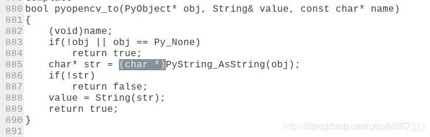
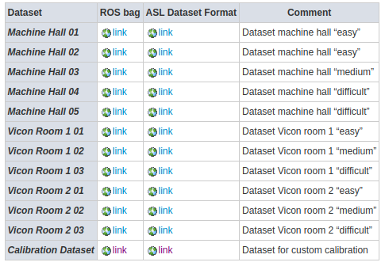

树莓派4 运行ORB-SLAM2¶
1. 更换源¶
树莓派开机后，首先要换镜像源（本人用的清华源），如果用树莓派自带的镜像源，会出现各种依赖问题
1.1 查看系统版本¶
cat /etc/os-release
VERSION_ID为版本号；
VERSION_CODENAME为版本buster（有的为stretch版本，这个要看清楚，影响后面改镜像源要输入的代码）
1.2 更换软件源¶
sudo nano /etc/apt/sources.list
用#注释文件中的所有内容，添加： deb http://mirrors.tuna.tsinghua.edu.cn/raspbian/raspbian/ buster main contrib non-free rpi deb-src http://mirrors.tuna.tsinghua.edu.cn/raspbian/raspbian/ buster main contrib non-free rpi 注意代码中的buster部分，如果第一步查看的版本不是buster，要将buster部分改为你所使用树莓派系统的版本 添加完成后，ctrl+o保存，然后点击回车，再ctrl+x退出
1.3 更换系统源¶
sudo nano /etc/apt/sources.list.d/raspi.list
用#注释文件中的所有内容，添加： deb http://mirrors.tuna.tsinghua.edu.cn/raspberrypi/ buster main ui deb-src http://mirrors.tuna.tsinghua.edu.cn/raspberrypi/ buster main ui 添加完成后，ctrl+o保存，然后点击回车，再ctrl+x退出
2 安装eigen¶
2.1 安装相关依赖¶
sudo apt-get install libboost-all-dev libblas-dev liblapack-dev
2.2 安装eigen¶
sudo apt-get install libeigen3-dev
3 安装opencv¶
3.1 安装相关依赖¶
sudo apt-get install build-essential libgtk2.0-dev libvtk5-dev libjpeg-dev libtiff4-dev libjasper-dev libopenexr-dev libtbb-dev
可能在安装时会提醒你更换依赖项版本，你更换成提供的相应版本就可以了
3.2 安装opencv¶
进入到下载的opencv文件夹中
mkdir build
cd build
cmake -D CMAKE_BUILD_TYPE=RELEASE -D CMAKE_INSTALL_PREFIX=/usr/local -D WITH_FFMPEG=OFF .. -DENABLE_PRECOMPILED_HEADERS=OFF
cmake过程出现错误可参考 这里…
cmake成功后，输入：
make -j8
需要等待很长时间，可能会出现
…cv2.cpp.o] Error 1

具体可参考 可参考该博客
make需要等很长时间，编译完成后，一定一定要记得输入：
sudo make install
这样才能将opencv安装到树莓派上
3 安装pangolin¶
3.1 安装依赖¶
sudo apt-get install libglew-dev
3.2 安装pangolin¶
进入到pangolin文件夹，依次输入：
mkdir build
cd build
cmake -DCPP11_NO_BOOST=1 ..
make -j
在make时可能出现错误，参考 这里…
问题：/home/micoarm/Pangolin/include/pangolin/video/drivers/ffmpeg.h:143:5: error: ‘PixelFormat’ does not name a type PixelFormat fmtdst; make[2]: *** [src/CMakeFiles/pangolin.dir/video/video_output.cpp.o] Error 1 make[2]: Leaving directory /home/micoarm/Pangolin/build’ make[1]: *** [src/CMakeFiles/pangolin.dir/all] Error 2 make[1]: Leaving directory/home/micoarm/Pangolin/build’ make: *** [all] Error 2***
**解决办法：**打开Pagolin/src/CMakeList.txt，将 find_package(FFMPEG QUIET)模块的所有部分注释掉.
编译完成后，输入
sudo make install
4 编译orb-slam2¶
cd ORB_SLAM2
chmod +x build.sh
./build.sh
可能会出现一些错误
usleep未定义： 对相应文件增加
#include<unistd.h>
编译ORB-SLAM2出现fatal error config.h没有那个文件或目录 根据ORB-SLAM2主文件夹下面的build.sh里面的步骤配置cmake make 或者直接运行build.sh
5 运行ORB-SLAM2¶
5.1 Monocular Examples¶
5.1.1 TUM Dataset¶
Download a sequence from http://vision.in.tum.de/data/datasets/rgbd-dataset/download and uncompress it.
Execute the following command. Change TUMX.yaml to TUM1.yaml,TUM2.yaml or TUM3.yaml for freiburg1, freiburg2 and freiburg3 sequences respectively. Change PATH_TO_SEQUENCE_FOLDERto the uncompressed sequence folder.
./Examples/Monocular/mono_tum Vocabulary/ORBvoc.txt Examples/Monocular/TUMX.yaml PATH_TO_SEQUENCE_FOLDER
5.1.2 KITTI Dataset¶
Download the dataset (grayscale images) from http://www.cvlibs.net/datasets/kitti/eval_odometry.php
Execute the following command. Change KITTIX.yamlby KITTI00-02.yaml, KITTI03.yaml or KITTI04-12.yaml for sequence 0 to 2, 3, and 4 to 12 respectively. Change PATH_TO_DATASET_FOLDER to the uncompressed dataset folder. Change SEQUENCE_NUMBER to 00, 01, 02,.., 11.
./Examples/Monocular/mono_kitti Vocabulary/ORBvoc.txt Examples/Monocular/KITTIX.yaml PATH_TO_DATASET_FOLDER/dataset/sequences/SEQUENCE_NUMBER
5.1.3 EuRoC Dataset¶
Download a sequence (ASL format) from http://projects.asl.ethz.ch/datasets/doku.php?id=kmavvisualinertialdatasets
Execute the following first command for V1 and V2 sequences, or the second command for MH sequences. Change PATH_TO_SEQUENCE_FOLDER and SEQUENCE according to the sequence you want to run.
Execute the following first command for V1 and V2 sequences, or the second command for MH sequences. Change PATH_TO_SEQUENCE_FOLDER and SEQUENCE according to the sequence you want to run.
./Examples/Monocular/mono_euroc Vocabulary/ORBvoc.txt Examples/Monocular/EuRoC.yaml PATH_TO_SEQUENCE/cam0/data Examples/Monocular/EuRoC_TimeStamps/SEQUENCE.txt
5.2 Stereo Examples¶
5.2.1 KITTI Dataset¶
Download the dataset (grayscale images) from http://www.cvlibs.net/datasets/kitti/eval_odometry.php
Execute the following command. Change KITTIX.yamlto KITTI00-02.yaml, KITTI03.yaml or KITTI04-12.yaml for sequence 0 to 2, 3, and 4 to 12 respectively. Change PATH_TO_DATASET_FOLDER to the uncompressed dataset folder. Change SEQUENCE_NUMBER to 00, 01, 02,.., 11.
./Examples/Stereo/stereo_kitti Vocabulary/ORBvoc.txt Examples/Stereo/KITTIX.yaml PATH_TO_DATASET_FOLDER/dataset/sequences/SEQUENCE_NUMBER
5.2.2 EuRoC Dataset¶
Download a sequence (ASL format) from [http://projects.asl.ethz.ch/datasets/doku.php?id=kmavvisualinertialdatasets]（http://projects.asl.ethz.ch/datasets/doku.php?id=kmavvisualinertialdatasets）
Execute the following first command for V1 and V2 sequences, or the second command for MH sequences. Change PATH_TO_SEQUENCE_FOLDER and SEQUENCE according to the sequence you want to run.

./Examples/Stereo/stereo_euroc Vocabulary/ORBvoc.txt Examples/Stereo/EuRoC.yaml PATH_TO_SEQUENCE/mav0/cam0/data PATH_TO_SEQUENCE/mav0/cam1/data Examples/Stereo/EuRoC_TimeStamps/SEQUENCE.txt
./Examples/Stereo/stereo_euroc Vocabulary/ORBvoc.txt Examples/Stereo/EuRoC.yaml PATH_TO_SEQUENCE/cam0/data PATH_TO_SEQUENCE/cam1/data Examples/Stereo/EuRoC_TimeStamps/SEQUENCE.txt
5.3 RGB-D Example¶
5.3.1 TUM Dataset¶
Download a sequence from http://vision.in.tum.de/data/datasets/rgbd-dataset/download and uncompress it.
Associate RGB images and depth images using the python script associate.py. We already provide associations for some of the sequences in Examples/RGB-D/associations/. You can generate your own associations file executing:
python associate.py PATH_TO_SEQUENCE/rgb.txt PATH_TO_SEQUENCE/depth.txt > associations.txt
Execute the following command. Change TUMX.yaml to TUM1.yaml,TUM2.yaml or TUM3.yaml for freiburg1, freiburg2 and freiburg3 sequences respectively. Change PATH_TO_SEQUENCE_FOLDERto the uncompressed sequence folder. Change ASSOCIATIONS_FILE to the path to the corresponding associations file.
./Examples/RGB-D/rgbd_tum Vocabulary/ORBvoc.txt Examples/RGB-D/TUMX.yaml PATH_TO_SEQUENCE_FOLDER ASSOCIATIONS_FILE
6 ROS Examples¶
……